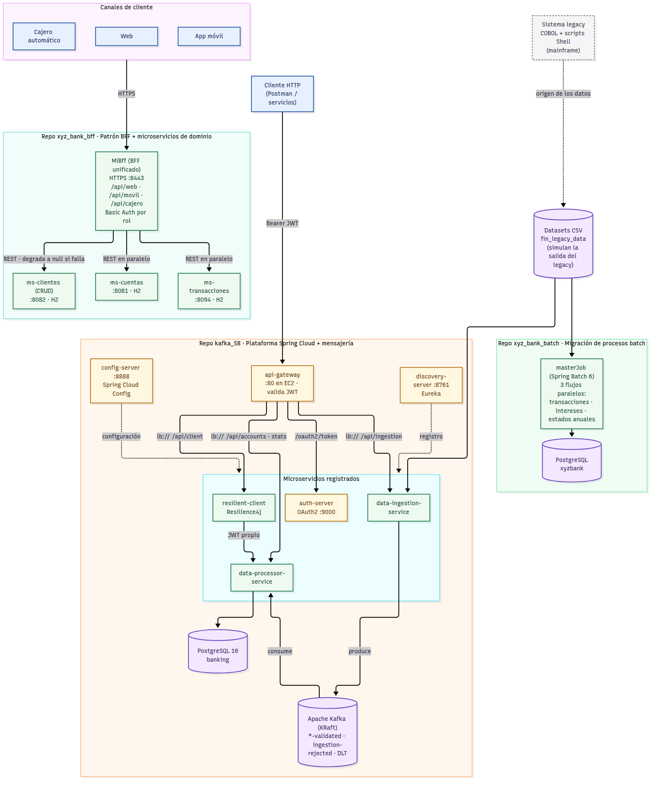
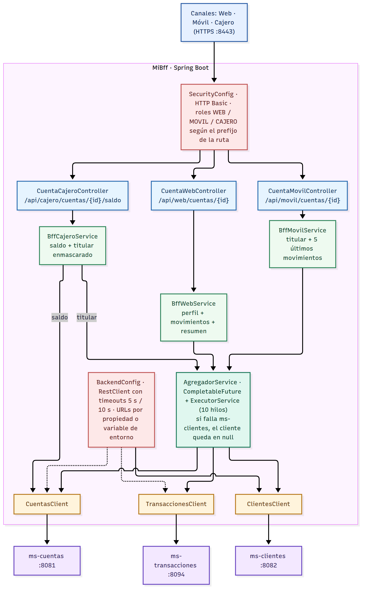
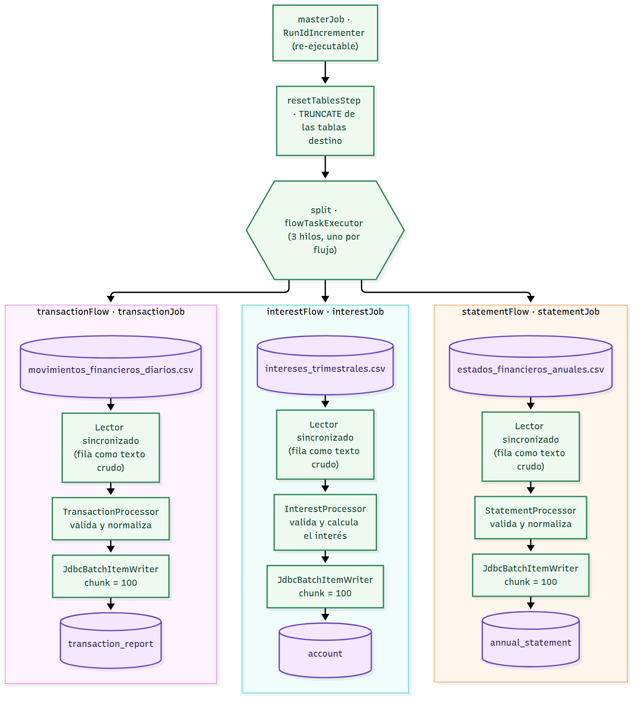
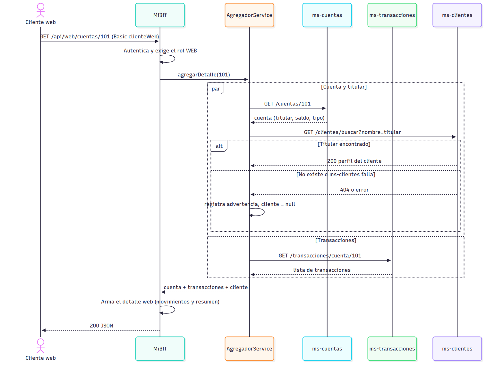
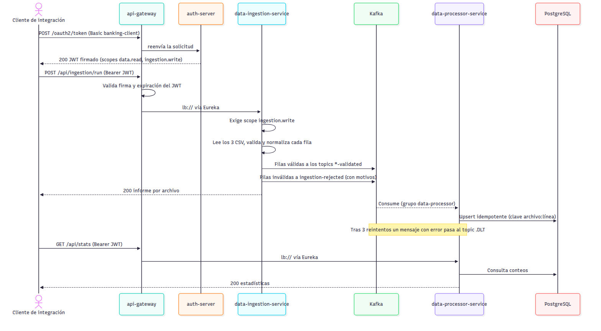
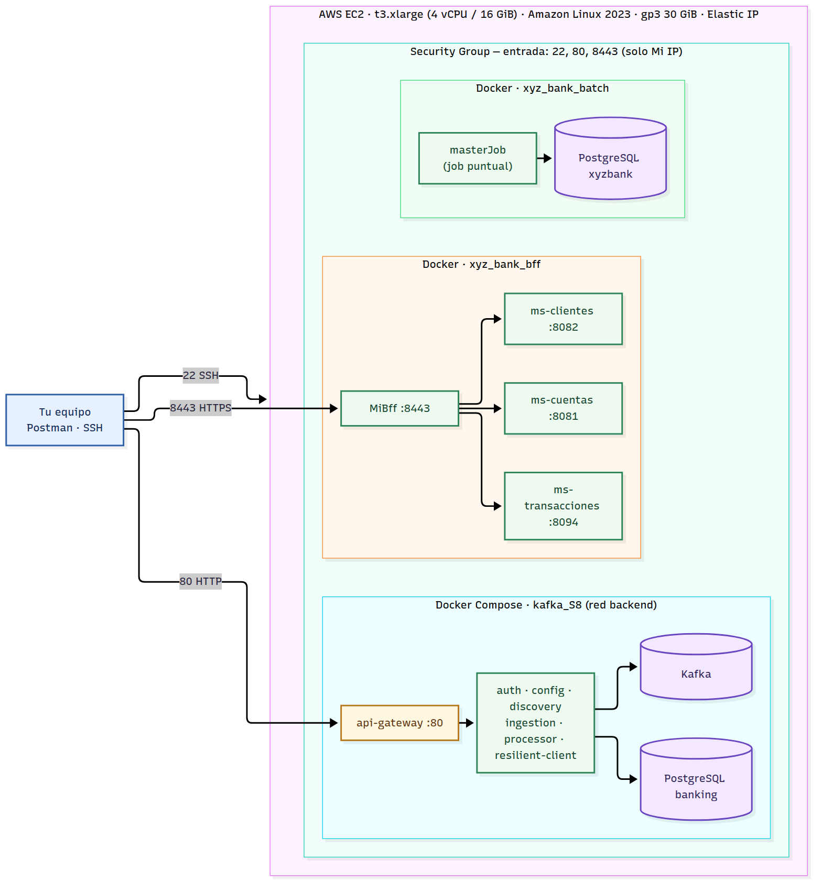

Desarrollo Backend III
Informe técnico final: modernización del sistema legacy del Banco XYZ
El Banco XYZ opera desde hace más de 30 años sobre una plataforma legacy en COBOL y scripts Shell que se ejecuta en servidores mainframe. Sus limitaciones de escalabilidad, el alto costo de mantención y la dificultad para integrar nuevas tecnologías motivaron el proyecto: migrar los procesos y servicios del sistema legacy a una arquitectura de microservicios, contenerizada y desplegable en la nube.
La solución se construyó en tres repositorios que cubren las tres partes del encargo y se integran como un solo ecosistema:
masterJob ejecuta en paralelo los tres procesos del legacy (transacciones diarias, intereses y estados de cuenta), valida cada registro, corrige o rechaza los datos inválidos con trazabilidad completa y tolera fallos transitorios de la base de datos.Los tres sistemas se despliegan con Docker Compose en una sola instancia EC2 mediante un script que los levanta en orden y ejecuta pruebas de humo. Las cifras de este informe provienen de una ejecución completa de ese despliegue.
El sistema de gestión bancaria procesa transacciones, genera estados de cuenta, calcula intereses y administra clientes. Está escrito en COBOL y scripts Shell sobre mainframe. El encargo identifica tres problemas de fondo:
| Parte del encargo | Repositorio | Qué se implementó |
|---|---|---|
| Parte 1: migración de procesos batch con Spring Batch | xyz_bank_batch | Tres procesos (transacciones, intereses, estados anuales) en un job maestro con validación, skip, retry y bitácora de calidad de datos |
| Parte 2: patrón Backend for Frontend | xyz_bank_bff | BFF para web, móvil y cajero, con autenticación por canal y HTTPS; microservicios de cuentas, transacciones y clientes |
| Parte 3: microservicios resilientes con Spring Cloud | kafka_S8 y xyz_bank_bff | Config Server, Eureka, balanceo y enrutamiento, OAuth2, Resilience4j, tópicos Kafka con productores y consumidores, Docker Compose y preparación para AWS |
Los datos de entrada provienen de fin_legacy_data, que simula la salida del legacy e incluye errores deliberados (montos vacíos o negativos, fechas en formatos mixtos, tipos desconocidos, edades fuera de rango).
La migración se organizó en torno a cinco procesos críticos que se complementan: sin el batch no se migra la lógica del legacy; sin microservicios y BFF persisten el acoplamiento y la sobrecarga; sin seguridad distribuida el modelo queda expuesto; y sin mensajería los servicios siguen acoplados. Cada uno responde a una limitación concreta del legacy y tiene un componente verificable en el código.
| N° | Proceso clave | Limitación del legacy que resuelve | Solución implementada | Dónde |
|---|---|---|---|---|
| 1 | Migración de procesos batch a Spring Batch | Programas COBOL y Shell difíciles de mantener, sin reintentos ni trazabilidad | Tres jobs paralelos con lectura, validación y escritura por chunks de 100; skip de datos inválidos, retry ante fallos transitorios de base de datos y bitácora data_quality_log | xyz_bank_batch |
| 2 | División del monolito en microservicios | Escalado y evolución acoplados; un fallo afecta a todo el sistema | Microservicios independientes de cuentas, transacciones y clientes, más servicios de ingesta y procesamiento, cada uno con su base de datos y su ciclo de despliegue | xyz_bank_bff, kafka_S8 |
| 3 | Implementación del patrón BFF | Todos los canales reciben los mismos datos | Un BFF con tres rutas y respuestas distintas: detalle completo en web, resumen liviano en móvil y saldo mínimo en cajero | xyz_bank_bff |
| 4 | Seguridad distribuida con Spring Cloud Security | Seguridad centralizada y limitada | Auth Server OAuth2 que emite JWT con scopes, validados en el gateway y de nuevo en cada servicio; en el BFF, HTTPS y roles por canal | kafka_S8, xyz_bank_bff |
| 5 | Mensajería asíncrona con Apache Kafka | Procesamiento síncrono y acoplado; sin integración de eventos | Ingesta que valida y publica en tópicos; consumidor idempotente que persiste en PostgreSQL; reintentos y cola de mensajes fallidos (DLT) | kafka_S8 |
A partir del contexto del banco se definieron cinco requerimientos clave. Cada decisión de arquitectura se justifica contra alguno de ellos.
| Requerimiento del negocio | Decisión de arquitectura | Justificación |
|---|---|---|
| RN1. Escalabilidad y bajo costo de mantención | Microservicios contenerizados con Docker; servicios registrados en Eureka y balanceados con lb:// | Cada servicio se construye, despliega y escala por separado. El escalado horizontal se verificó: al replicar data-processor-service a 2 instancias, Eureka registró ambas y el gateway enruta con lb:// entre las instancias registradas. Reemplaza la dependencia de un único mainframe. |
| RN2. Respuestas adecuadas a cada canal | Patrón BFF con un controlador y un servicio de adaptación por canal | La web necesita datos completos; el móvil, pocos datos para ahorrar ancho de banda; el cajero, solo lo imprescindible y seguro. Un BFF por canal evita que un backend único sirva a todos lo mismo, y permite que los equipos de frontend y backend evolucionen en paralelo. |
| RN3. Seguridad en un entorno distribuido | OAuth2 con JWT y scopes (Client Credentials); validación en el gateway y en cada servicio; HTTPS y roles en el BFF; microservicios internos sin exposición pública | Reemplaza la seguridad centralizada por defensa en profundidad: aunque el gateway ya rechace un token inválido, cada servicio lo vuelve a validar y aplica sus propios scopes. Los servicios sin autenticación propia solo son alcanzables desde la red interna de Docker. |
| RN4. Disponibilidad y tolerancia a fallos | Resilience4j (circuit breaker, retry, rate limiter) con respuesta alternativa; DLT en Kafka; degradación controlada en el BFF | Un servicio caído no debe tumbar a los demás. Con el procesador detenido, el cliente resiliente sigue respondiendo con la última respuesta buena; si ms-clientes falla, el BFF entrega igual la cuenta con el cliente en null. |
| RN5. Integridad y equivalencia de los datos migrados | Validación explícita por tipo de error, bitácora de calidad, escritura idempotente y esquema de base de datos con restricciones | Los procesos nuevos deben producir resultados equivalentes a los del legacy sin perder ni duplicar datos. Cada fila termina persistida, corregida o rechazada con su motivo, y repetir una ejecución no genera duplicados. |
| Decisión | Motivo | Alternativa descartada |
|---|---|---|
| Spring Batch para los procesos batch | Chunks, skip, retry, reinicio y paralelismo ya resueltos por el framework | Mantener scripts Shell: sin tolerancia a fallos ni métricas |
| Un BFF unificado con tres canales | Un solo despliegue, con rutas, roles y respuestas independientes por canal | Una API única para todos los canales |
| Kafka para la ingesta | Desacopla la validación del procesamiento, permite reintentos y deja los errores en una cola propia | Llamadas síncronas entre servicios |
| Config Server, Eureka y Gateway de Spring Cloud | Configuración centralizada, descubrimiento dinámico y punto de entrada único | URL fijas y archivos de configuración por servicio |
| Un repositorio por sistema | Cada sistema tiene su ciclo de vida y su Compose; se integran por documentación y por red | Un único monorepositorio |
| Docker Compose en una sola instancia EC2 | Despliegue reproducible y de bajo costo para el alcance del proyecto | ECS o Kubernetes: más complejos y costosos para este alcance |
| Bases propias por servicio: H2 en memoria en los microservicios del BFF; PostgreSQL en la plataforma y el batch | Cada servicio es dueño de sus datos; H2 simplifica la demostración de los microservicios de dominio | Una base compartida entre servicios |
| Ámbito | Tecnología |
|---|---|
| Lenguaje y framework | Java 21, Spring Boot 4.1, Spring Batch 6, Spring Cloud 2025.1, Spring Security, Spring Data JPA |
| Mensajería y datos | Apache Kafka 3.9 (modo KRaft), PostgreSQL 16, H2 en memoria |
| Resiliencia y descubrimiento | Resilience4j, Eureka, Spring Cloud Gateway, Spring Cloud Config |
| Seguridad | OAuth2 Client Credentials con Spring Authorization Server, JWT firmados con RSA, HTTP Basic y TLS (PKCS12) en el BFF |
| Contenedores y nube | Docker, Docker Compose, Amazon EC2 (Amazon Linux 2023) |
El diagrama muestra los tres sistemas, sus puertos y las interacciones entre sus componentes. Los canales llegan al BFF por HTTPS; los clientes de integración entran por el API Gateway; el batch trabaja de forma independiente sobre su propia base.

| Actor | Caso de uso | Cómo se realiza |
|---|---|---|
| Cliente web | Consultar el detalle de una cuenta con perfil y resumen | GET /api/web/cuentas/{id} en el BFF |
| Cliente de app móvil | Consultar saldo y últimos movimientos | GET /api/movil/cuentas/{id} en el BFF |
| Cajero automático | Consultar el saldo | GET /api/cajero/cuentas/{id}/saldo en el BFF |
| Operador de plataforma | Administrar perfiles de clientes; desplegar y escalar | CRUD de ms-clientes (red interna); script de despliegue y docker compose --scale |
| Cliente de integración | Obtener token; ejecutar la ingesta; consultar estadísticas, cuentas y rechazos; consultar con resiliencia | /oauth2/token, /api/ingestion/run, /api/stats, /api/accounts y /api/client/** en el gateway |
| Analista de datos | Ejecutar los procesos batch; revisar la calidad de los datos | docker compose run batch y consultas sobre data_quality_log |
El BFF separa la seguridad, los controladores por canal, los servicios que adaptan la respuesta, el agregador que consulta en paralelo y los clientes REST hacia cada microservicio. Cada capa tiene un color distinto en el diagrama.

El sistema reescribe en Spring Batch 6 los tres procesos del legacy. Un masterJob re-ejecutable limpia las tablas destino y lanza en paralelo tres flujos, uno por archivo de entrada. Cada flujo lee las filas como texto crudo, las valida y normaliza en un procesador y las escribe en PostgreSQL por chunks de 100 registros.

masterJob: tres flujos paralelos de lectura, procesamiento y escritura. Los tres procesadores registran sus rechazos y correcciones en data_quality_logLos lectores entregan cada fila sin convertir; toda conversión y validación ocurre en los procesadores, de modo que cada problema recibe un código de error explícito en lugar de convertirse en silencio (por ejemplo, un monto vacío no se transforma en cero). Un registro inválido se rechaza con todos sus códigos; un registro válido puede recibir correcciones trazadas.
| Proceso | Persistidas | Rechazadas | Principales causas de rechazo y correcciones |
|---|---|---|---|
| Transacciones diarias | 392 | 608 | Tipo inválido (256), monto vacío (162), monto negativo (121), fecha inexistente (49), monto cero (20). Se corrigieron 284 fechas a formato ISO. |
| Intereses | 320 | 680 | Saldo vacío (197), tipo de cuenta no elegible (163), edad fuera de rango 18–99 (146), edad vacía (126), titular no identificado (48). Interés: ahorro 0,5 %, préstamo 2 %, hipoteca 3 %. |
| Estados de cuenta anuales | 603 | 397 | Monto negativo (232), monto cero (116), monto vacío (48), duplicado (1). Se corrigieron 472 fechas, 106 descripciones vacías y 29 tipos con tilde. |
Cada una de las 3.000 líneas termina persistida o rechazada, y cada rechazo o corrección queda en la tabla data_quality_log con el paso, la línea, la acción, el código de error y el registro original. El job imprime además un resumen por paso y por código.
| Escenario | Tratamiento |
|---|---|
| Registro que no supera la validación de negocio | Skip sin revertir el chunk; queda en la bitácora con su código |
| Línea con columnas faltantes o sobrantes | Skip en la lectura (STRUCTURAL_ERROR) con la línea y su contenido |
| Violación de restricción en la base de datos | Skip en la escritura (DB_CONSTRAINT_VIOLATION) |
| Bloqueo, deadlock o timeout de PostgreSQL | Retry hasta 3 veces con backoff exponencial de 100 ms a 1 s |
| Más rechazos que el límite configurado (1.000 por paso) | El paso falla: el dato está demasiado dañado para continuar |
| Cualquier otro error (BD caída, archivo inexistente, defecto) | No se salta: el paso y el job fallan, para no esconder una falla de infraestructura como si fuera un dato malo |
El esquema de la base actúa como segunda línea de defensa (NOT NULL, CHECK (amount > 0), tipos permitidos y source_id único). Como el job se puede volver a ejecutar, las tablas se recargan completas en cada corrida: repetirlo produce siempre el mismo resultado.
Los tres flujos corren en paralelo, uno por hilo (flowTaskExecutor), y los chunks de cada paso se ejecutan en un segundo pool (stepTaskExecutor, 3 × 2 = 6 hilos) con 12 conexiones de base de datos (HikariCP). La configuración se eligió midiendo, no por estimación: el costo dominante son las idas y vueltas a PostgreSQL (un commit por chunk), por lo que el tamaño del chunk pesa más que el número de hilos.
| Conjunto de datos | Hilos | chunk 5 | chunk 10 | chunk 50 | chunk 100 | chunk 250 |
|---|---|---|---|---|---|---|
| Oficial: 3.000 registros (5 ejecuciones por celda) | 1 | 1.233 | 1.059 | 887 | 778 | 793 |
| 2 | 1.218 | 1.025 | 750 | 738 | 775 | |
| 4 | 1.120 | 943 | 767 | 730 | 724 | |
| 8 | 1.148 | 950 | 813 | 733 | 736 | |
| Escalado ×10: 30.000 registros (3 ejecuciones por celda) | 1 | 4.157 | 3.315 | 2.612 | 2.529 | 2.471 |
| 2 | 4.363 | 3.485 | 2.476 | 2.481 | 2.347 | |
| 4 | 4.519 | 3.339 | 2.632 | 2.564 | 2.507 | |
| 8 | 4.536 | 3.399 | 2.515 | 2.502 | 2.421 |
Pasar de chunk 5 a 100 reduce el tiempo cerca de un 40 % en ambos conjuntos, porque baja los commits de 200 a 10 por archivo. Sobre 100 ya no hay mejora apreciable, y más hilos por paso quedan dentro del ruido de medición. Se eligió chunk 100 con 2 hilos por paso: unos 35 % más rápido que la configuración inicial (chunk 5: 1.120 ms frente a 738 ms) con el pool más pequeño que captura la mejora. Las mediciones se hicieron en un entorno de 4 vCPU y 15 GB con PostgreSQL 16 local.
| Tabla | Contenido |
|---|---|
transaction_report | Transacciones válidas: identificador de origen único, fecha, monto mayor que cero y tipo (DEBITO o CREDITO) |
account | Cuentas elegibles con titular, saldo con interés, interés, edad y tipo (AHORRO, PRESTAMO, HIPOTECA) |
annual_statement | Movimientos anuales válidos y normalizados |
data_quality_log | Cada rechazo y cada corrección, con paso, línea, acción, código, detalle y registro original |
El repositorio contiene el BFF (MiBff) y tres microservicios de dominio independientes. Cada microservicio es un proyecto Spring Boot con su propia base H2 en memoria, que se carga desde un archivo CSV al arrancar.
| Módulo | Puerto | Responsabilidad | Endpoints |
|---|---|---|---|
| MiBff | 8443 (HTTPS) | Punto de entrada por canal; agrega y adapta las respuestas | GET /api/web/cuentas/{id}, GET /api/movil/cuentas/{id}, GET /api/cajero/cuentas/{id}/saldo |
| ms-cuentas | 8081 | Gestión de cuentas (1.000 cuentas cargadas desde CSV) | GET /cuentas, GET /cuentas/{id} |
| ms-transacciones | 8094 | Movimientos por cuenta (1.000 registros cargados desde CSV) | GET /transacciones/cuenta/{id} |
| ms-clientes | 8082 | Administración de perfiles de clientes (10 clientes cargados) | GET /clientes, GET /clientes/{id}, GET /clientes/buscar?nombre=, POST, PUT /clientes/{id}, DELETE /clientes/{id} |
| Canal | Rol requerido | Respuesta |
|---|---|---|
| Web | WEB | Cuenta completa, perfil del cliente (RUT, correo, teléfono, dirección, fecha de nacimiento), lista íntegra de movimientos y un resumen calculado de ingresos, egresos y saldo neto. Para la cuenta 101: 46 movimientos. |
| Móvil | MOVIL | Titular, saldo y únicamente los últimos 5 movimientos, para reducir el consumo de datos |
| Cajero | CAJERO | Saldo y titular enmascarado (por ejemplo, «Charlie G.»), sin datos de contacto; no consulta el historial de transacciones |
El AgregadorService consulta a los microservicios con CompletableFuture sobre un pool fijo de 10 hilos: la cuenta y las transacciones se piden en paralelo, y el cliente se busca en ms-clientes en cuanto se conoce el titular de la cuenta. Los clientes REST (RestClient) tienen timeouts de 5 s para conectar y 10 s para leer. Si ms-clientes falla o el titular no existe (por ejemplo, las cuentas con titular «Unknown»), el canal responde igual con el cliente en null y registra una advertencia, en lugar de fallar toda la consulta.
El BFF exige HTTPS (certificado PKCS12) y HTTP Basic con tres usuarios, uno por canal. Cada prefijo de ruta (/api/web, /api/movil, /api/cajero) exige su rol: sin credenciales responde 401 y con el usuario de otro canal responde 403. Los tres microservicios no tienen autenticación propia, por lo que no se publican fuera de la red interna.
Ecosistema de microservicios que migra los CSV legados a PostgreSQL a través de Apache Kafka, con configuración centralizada, descubrimiento de servicios, seguridad OAuth2 y resiliencia.
| Servicio | Puerto | Rol |
|---|---|---|
| config-server | 8888 | Spring Cloud Config: sirve la configuración de todos los servicios desde config-repo/ |
| discovery-server | 8761 | Eureka: registro y descubrimiento dinámico de servicios |
| auth-server | 9000 | Spring Authorization Server: emite JWT firmados con RSA mediante Client Credentials |
| api-gateway | 8080 (80 en EC2) | Entrada única: valida el JWT (Resource Server reactivo) y enruta con lb:// vía Eureka |
| data-ingestion-service | 8081 interno | Lee los CSV, valida y normaliza cada fila, y la publica en Kafka; las filas inválidas van a un tópico de rechazados con sus motivos |
| data-processor-service | 8082 interno | Consume los tópicos, persiste en PostgreSQL con upsert idempotente, calcula intereses y expone consultas |
| resilient-client | 8083 (solo 127.0.0.1) | Consumidor síncrono del procesador, protegido con Resilience4j |
| Kafka y PostgreSQL | 9092 y 5432 internos | Apache Kafka 3.9 en modo KRaft (sin ZooKeeper) y PostgreSQL 16 |
El auth-server entrega tokens con el flujo Client Credentials. Existen dos clientes: banking-client (scopes data.read e ingestion.write) para consumidores externos, y resilient-client (scope data.read) como identidad de servicio. El gateway rechaza con 401 cualquier /api/** sin un JWT válido, y cada servicio vuelve a validar el token y aplica sus scopes: POST /api/ingestion/** exige ingestion.write y las lecturas exigen data.read (403 si falta). Las claves públicas se publican en /oauth2/jwks.
| Tópico | Particiones | Contenido |
|---|---|---|
interests-validated | 3 | Filas válidas de intereses.csv |
transactions-validated | 3 | Filas válidas de transacciones.csv |
annual-accounts-validated | 3 | Filas válidas de cuentas_anuales.csv |
ingestion-rejected | 1 | Filas inválidas con la lista de motivos, para auditoría |
<tópico>.DLT | automático | Mensajes que el consumidor no pudo procesar tras 3 reintentos |
La clave de cada mensaje es archivo:línea, que también es la clave primaria en PostgreSQL: volver a ejecutar la ingesta, o recibir un mensaje repetido, actualiza la fila en lugar de duplicarla. El productor usa acks=all con idempotencia, y el consumidor reintenta tres veces con una pausa de un segundo antes de enviar el mensaje a la DLT. Con los datos actuales, la ingesta acepta 1.552 filas y rechaza 1.448 (465, 401 y 686 aceptadas en intereses, transacciones y cuentas anuales).
| Patrón | Configuración |
|---|---|
| Circuit Breaker | Ventana de 10 llamadas, mínimo 4; abre con 50 % o más de fallos o 80 % o más de llamadas lentas (más de 2 s); 15 s en OPEN y 2 llamadas de prueba en HALF_OPEN |
| Retry | 3 intentos con backoff exponencial (500 ms, 1 s); el circuit breaker envuelve al retry, así que una secuencia agotada cuenta como un solo fallo |
| Rate Limiter | 20 peticiones por segundo por instancia; el exceso recibe 429 |
| Timeouts | Conexión 2 s, lectura 3 s |
| Respuesta alternativa | Devuelve la última respuesta buena (source: "cache") o un contenido vacío (source: "default"); los errores 4xx del procesador se propagan |
Los tres repositorios forman un ecosistema pero se integran de dos formas distintas: dentro de cada sistema los componentes se comunican por red en tiempo de ejecución, y entre los sistemas la integración es conceptual y documental (misma arquitectura, mismos datos de origen, un solo despliegue).
| Interacción | Mecanismo | Estado |
|---|---|---|
| MiBff → ms-cuentas, ms-transacciones, ms-clientes | REST síncrono con RestClient; llamadas en paralelo; timeouts 5 s y 10 s | Operativo |
| MiBff → ms-clientes ante una falla | El canal responde igual con el cliente en null | Operativo |
| Gateway → servicios de kafka_S8 | lb:// con Eureka; JWT validado en el gateway y en cada servicio | Operativo |
| data-ingestion → Kafka → data-processor | Tópicos *-validated, ingestion-rejected y .DLT; productor idempotente; consumidor con reintentos | Operativo |
| resilient-client → data-processor | Circuit Breaker, Retry y Rate Limiter con respuesta alternativa | Operativo |
| xyz_bank_batch → PostgreSQL | Jobs con chunks, skip y retry | Operativo |
| MiBff ↔ plataforma de kafka_S8 (OAuth2, Eureka, Config) | — | Pendiente |
| ms-transacciones → Kafka (evento de transacción completada) | — | Pendiente |
Alcance de la integración. Cada sistema lee sus propios datos: el BFF devuelve lo que cargan sus microservicios al arrancar, kafka_S8 usa su propio PostgreSQL y el batch deja sus resultados en su propia base. Conectarlos en tiempo de ejecución (por ejemplo, que el BFF valide los JWT del auth-server) es la evolución prevista en la sección 11.

GET /api/web/cuentas/101: consultas en paralelo y degradación controlada
Esta sección resume de forma transversal cómo cada sistema cubre los requerimientos RN3 (seguridad) y RN4 (tolerancia a fallos).
| Componente | Autenticación y autorización | Transporte |
|---|---|---|
| MiBff | HTTP Basic con un usuario por canal; cada prefijo de ruta exige su rol (WEB, MOVIL, CAJERO) | HTTPS (:8443) con keystore PKCS12 |
| ms-cuentas, ms-transacciones, ms-clientes | Sin autenticación propia; accesibles solo desde el BFF dentro de la red de Docker | HTTP, red interna |
| api-gateway y servicios de kafka_S8 | JWT OAuth2 (Client Credentials, RSA), validado en el gateway y de nuevo en cada servicio, con scopes data.read e ingestion.write | HTTP :80 (TLS con un proxy o balanceador delante) |
| xyz_bank_batch | No expone endpoints; accede a PostgreSQL con credenciales | Red interna de Docker |
| Instancia EC2 | Security Group con entrada solo en 22, 80 y 8443, limitada a la IP del operador | — |
| Capa | Mecanismo |
|---|---|
| BFF | Timeouts de conexión y lectura; llamadas concurrentes; el cliente es opcional y su falla no rompe la respuesta |
| Cliente resiliente | Circuit Breaker, Retry con backoff, Rate Limiter y respuesta alternativa con la última respuesta buena |
| Kafka | Productor idempotente con acks=all, consumidor con 3 reintentos y cola de mensajes fallidos (.DLT); escritura idempotente por clave archivo:línea |
| Batch | Skip de datos inválidos, retry de errores transitorios de base de datos y falla explícita ante errores de infraestructura |
| Contenedores | Healthchecks y depends_on con condición de salud; reinicio automático; límite de memoria por contenedor |
Cada uno de los 12 servicios con código propio tiene su Dockerfile multietapa: una etapa de construcción con Maven y JDK 21 (maven:3.9-eclipse-temurin-21) y una etapa de ejecución con solo el JRE 21 (eclipse-temurin:21-jre-alpine), con usuario sin privilegios, un HEALTHCHECK en los servicios web y un límite de memoria del 75 % del contenedor para la JVM. Las imágenes se compilan dentro de Docker, por lo que no hace falta instalar Java ni Maven en el servidor.
Cada repositorio tiene su docker-compose.yaml: kafka_S8 levanta 9 contenedores, xyz_bank_bff 4, y xyz_bank_batch su PostgreSQL más un job que se ejecuta bajo demanda. Cada contenedor de Spring Boot tiene un límite de 512 MiB. Solo se publican hacia el exterior el API Gateway (puerto 80) y el BFF (puerto 8443); el resto de los servicios, Kafka y las bases de datos viven en redes internas.
| Parámetro | Valor |
|---|---|
| AMI | Amazon Linux 2023, arquitectura x86_64 |
| Tipo de instancia | t3.xlarge: 4 vCPU y 16 GiB de memoria |
| Almacenamiento | 30 GiB gp3 (las imágenes y la caché de build ocupan unos 12 GB) |
| Red | VPC por defecto, subred pública, IP pública (Elastic IP opcional) |
| Security Group, entrada | 22/tcp (SSH), 80/tcp (API Gateway de kafka_S8) y 8443/tcp (MiBff por HTTPS), todos con origen limitado a la IP del operador |
| Security Group, salida | Todo permitido (descarga de paquetes, imágenes y dependencias) |
No se abre ningún otro puerto: los microservicios sin autenticación propia, Config Server, Eureka, Kafka y las bases de datos solo son accesibles dentro de la red de Docker o por túnel SSH.

El script deploy/ec2-setup.sh automatiza todo el despliegue y sirve tanto como User data al crear la instancia como por SSH. Realiza, en este orden:
/opt/xyz-bank, o los actualiza si ya existen.kafka_S8 con el gateway publicado en el puerto 80, y espera a que todos los servicios estén sanos.xyz_bank_bff; el BFF espera a que sus tres microservicios estén sanos.xyz_bank_batch y ejecuta una vez el masterJob.No hay dependencias entre los tres sistemas; el orden distribuye la espera. Es seguro volver a ejecutar el script: actualiza el código, reconstruye las imágenes y repite las pruebas. Variables como STACKS, BRANCH, RUN_BATCH y SWAP_MB permiten desplegar solo una parte o ajustar el comportamiento.
El script se ejecutó completo, desde cero, en un entorno con las mismas características que la instancia (4 vCPU y 16 GiB), con los repositorios clonados desde GitHub.
| Medición | Resultado |
|---|---|
| Pruebas de humo (gateway con token OAuth2, tres canales del BFF, datos del batch) | Las tres aprobadas |
| Contenedores | 14 en total, todos healthy |
| Memoria de los contenedores en reposo | ≈ 2,9 GiB (cada servicio Spring Boot entre 140 y 340 MiB; Kafka ≈ 470 MiB) |
| Memoria usada en el equipo completo en reposo | ≈ 3,7 GiB |
| Pico de memoria durante los builds de los 12 servicios | ≈ 3,9 GiB (muestreo cada 2 s) |
| Disco de Docker | ≈ 7,4 GB de imágenes y ≈ 4,8 GB de caché de build |
| Duración del despliegue en frío (sin imágenes ni caché) | ≈ 11 minutos |
| Segunda ejecución del script sobre los repositorios ya clonados | Actualiza, reconstruye y vuelve a aprobar las tres pruebas |
Alcance de las mediciones. Se midieron en un servidor con las mismas características que la instancia recomendada, no en una instancia EC2 real. La duración depende de la red y del almacenamiento. La estimación inicial de memoria, calculada a partir de los límites de los contenedores, fue de 8 a 9 GiB; al medir, el pico real fue menos de la mitad. Con esas cifras una t3.large (8 GiB) también cubriría la memoria, aunque no se probó con 2 vCPU.
Los servicios de kafka_S8 se registran en Eureka y el gateway los balancea con lb://, por lo que se pueden replicar sin cambios de código. Se comprobó con docker compose up -d --scale data-processor-service=2: Eureka registró las dos instancias en estado UP, y al volver a una sola réplica la segunda se retiró del registro. El BFF consulta a sus microservicios por URL fija, así que replicarlos requeriría registrarlos primero en Eureka (sección 11).
| Repositorio | Pruebas |
|---|---|
xyz_bank_batch | Pruebas unitarias de los tres procesadores (TransactionProcessorTest, InterestProcessorTest, StatementProcessorTest) y de la política de skip; pruebas de integración del job completo (MasterJobIntegrationTests) y de tolerancia a fallos (FaultToleranceIntegrationTests), que requieren PostgreSQL |
kafka_S8 | Pruebas de las reglas de validación (RecordValidatorTest) y del limitador de tasa (RateLimiterTests), más las pruebas de arranque de cada servicio |
xyz_bank_bff | Solo la prueba de arranque del contexto de cada módulo; la verificación funcional se hizo con pruebas manuales (sección 9.2) |
Se ejecutaron contra el despliegue completo: el batch por consola y los demás sistemas con peticiones HTTP, tal como se documenta en el archivo instrucciones.md de la entrega.
| Sistema | Prueba | Resultado obtenido |
|---|---|---|
| Batch | Ejecución del masterJob, y una segunda ejecución | Código de salida 0; 392 transacciones, 320 cuentas y 603 estados persistidos, y 2.576 registros en la bitácora; la segunda ejecución deja las mismas cantidades |
| BFF | Canal web, cuenta 101 | 200: perfil de Charlie Green, 46 movimientos y resumen de ingresos y egresos |
| BFF | Canal móvil, cuenta 101 | 200: titular, saldo y 5 movimientos |
| BFF | Canal cajero, cuentas 101, 102, 103, 105, 106 y 107 | 200: titular enmascarado y saldo propios de cada cuenta («Charlie G.», «Alice B.», «Bob J.», «Steve R.», «John D.», «Diana P.») |
| BFF | Cuenta 129 (titular «Unknown») | 200 con cliente: null: degradación controlada |
| BFF | Sin credenciales; usuario de otro canal | 401; 403 |
| BFF | Cuenta inexistente | 500 (ms-cuentas no traduce el error a 404; ver sección 11) |
| kafka_S8 | Token OAuth2; /api/stats sin token; con secreto incorrecto | 200 con JWT (30 min de vigencia); 401; 401 |
| kafka_S8 | Ingesta por el gateway | 200: 1.552 filas aceptadas y 1.448 rechazadas; las estadísticas pasan de cero a los conteos finales |
| kafka_S8 | Token de solo lectura en la ingesta; segunda ingesta | 403; mismos conteos que la primera (idempotencia) |
| kafka_S8 | Procesador detenido durante consultas del cliente resiliente | Responde con source: "cache"; el circuit breaker recorre CLOSED, OPEN, HALF_OPEN y vuelve a CLOSED |
| kafka_S8 | Kafka y escalado | 4 tópicos de negocio con el consumidor sin retraso; 2 instancias del procesador registradas en Eureka |
| Aspecto | Sistema legacy | Solución actual |
|---|---|---|
| Procesos batch | Programas COBOL y scripts Shell en mainframe | Spring Batch 6 con tres jobs paralelos, chunks de 100, skip y retry; re-ejecutable y con bitácora de rechazos |
| Rendimiento batch | Sin mediciones disponibles | 3.000 registros en una mediana de 738 ms; 30.000 en 2.481 ms; ≈ 35 % más rápido que la configuración inicial |
| Arquitectura | Monolito | Microservicios independientes, cada uno con su base y su despliegue |
| Respuesta a los canales | Los mismos datos para todos | Web con perfil, movimientos y resumen; móvil con titular y 5 movimientos; cajero con saldo y titular enmascarado |
| Seguridad | Centralizada y limitada | JWT OAuth2 con scopes en la plataforma; HTTPS y roles por canal en el BFF; servicios internos aislados por red |
| Tolerancia a fallos | Un módulo caído afecta a todo el sistema | Circuit breaker, reintentos, rate limiter, DLT y degradación controlada en el BFF |
| Calidad de datos | Sin trazabilidad de rechazos | Cada fila rechazada o corregida queda registrada con todos sus motivos |
| Despliegue | Servidores mainframe | Contenedores Docker; los tres sistemas en una instancia EC2 con un solo script |
No se dispone de mediciones del sistema legacy, por lo que la comparación es cualitativa salvo en las cifras que provienen de los propios repositorios. Las cifras de calidad de datos de xyz_bank_batch (1.315 persistidas y 1.685 rechazadas de 3.000) y de kafka_S8 (1.552 aceptadas y 1.448 rechazadas de 3.000) difieren porque cada repositorio aplica reglas propias; por ejemplo, el rango de edad aceptado es 18 a 99 en el batch y 18 a 120 en la plataforma.
| Desafío | Causa | Solución |
|---|---|---|
| Datos legados con errores | Montos vacíos o negativos, fechas en cuatro formatos, tipos desconocidos, edades fuera de rango y duplicados | Validación explícita con un código por tipo de error, normalización de fechas y tipos, y bitácora de calidad con el registro original |
| Rendimiento del batch | La configuración inicial usaba un pool compartido y chunks de 5 registros, con un commit por cada 5 filas | Dos pools separados, chunk de 100 y 12 conexiones, elegidos tras un benchmark con dos tamaños de datos |
| Servicios sin registrar en Spring | Los controladores, repositorios y la configuración estaban fuera del paquete base de la aplicación, que Spring Boot no escaneaba | @ComponentScan, @EntityScan y @EnableJpaRepositories explícitos; en Spring Boot 4, @EntityScan vive en un paquete nuevo |
| Microservicios bloqueados con 401 | Spring Security activo sin configuración propia exigía una contraseña generada al azar | Configuración con acceso abierto en los microservicios internos, que quedan aislados por la red de Docker y el Security Group |
| Error al deserializar las respuestas | Los clientes REST devolvían listas sin tipo y Jackson las convertía en mapas (ClassCastException) | Tipos genéricos explícitos en los clientes y en el agregador |
| El BFF no arrancaba con TLS | El keystore estaba guardado como un directorio y no como un archivo | Se corrigió su ubicación en los recursos del proyecto |
| Timeouts en el arranque en frío | Con 3 s de lectura, la primera consulta tras arrancar los servicios podía fallar | Timeouts del BFF de 5 s y 10 s |
| Vínculo entre cuenta y cliente | ms-cuentas no guarda el identificador del cliente, solo el nombre del titular | Búsqueda por nombre en ms-clientes con degradación a null si no hay coincidencia; mejora planteada en la sección 11 |
| Dimensionar la instancia | La estimación a partir de los límites de memoria sobrestimó el consumo real | Medir el despliegue completo antes de decidir el tamaño y la configuración de disco |
| Desplegar de forma reproducible | Tres sistemas con distintas pilas, y un buildx antiguo en la AMI que impide docker compose build | Dockerfile y Compose por sistema, y un script que instala buildx, levanta todo en orden y comprueba el resultado |
| N° | Mejora | Qué aporta |
|---|---|---|
| 1 | BFF como Resource Server OAuth2 | Reemplaza el HTTP Basic con usuarios en memoria por los JWT del auth-server, con una sola identidad para toda la solución |
| 2 | Pagos y eventos en ms-transacciones | Hoy solo consulta movimientos; registrar pagos, transferencias y depósitos, y publicar «transacción completada» en Kafka, conecta el BFF con la plataforma |
| 3 | Clave de cliente en la cuenta | Reemplaza la búsqueda por nombre (frágil si dos clientes se llaman igual) por un identificador de cliente en ms-cuentas |
| 4 | Eureka y Config Server en el BFF | Elimina las URL fijas y habilita el balanceo y el escalado horizontal de los microservicios del BFF |
| 5 | Errores HTTP coherentes | Responder 404 cuando no existe una cuenta o un cliente, en lugar del 500 actual |
| 6 | Un solo pipeline de datos | El batch y la ingesta Kafka procesan los mismos tipos de archivo con reglas distintas; unificar criterios de validación y destino |
| 7 | Pruebas automatizadas del BFF y de los microservicios | Hoy solo existe la prueba de arranque; cubrir la agregación, la degradación y la seguridad por canal |
| 8 | Secretos y TLS | Sacar las credenciales del código (variables de entorno o un gestor de secretos) y terminar TLS en el gateway con un balanceador |
| 9 | Observabilidad e integración continua | Métricas y logs centralizados, y un pipeline que construya las imágenes y ejecute las pruebas en cada cambio |
La solución migra los tres frentes del sistema legacy a una arquitectura moderna y verificable: los procesos batch se reescribieron con paralelismo, tolerancia a fallos y trazabilidad de datos; el patrón BFF entrega a cada canal la respuesta que necesita, con su propio control de acceso; y la plataforma de microservicios incorpora configuración centralizada, descubrimiento, seguridad OAuth2, resiliencia y mensajería asíncrona. Todo se despliega con contenedores en una sola instancia EC2 mediante un script que además comprueba el resultado.
Las decisiones se sostienen en mediciones propias del proyecto: el benchmark del batch, el consumo real de memoria del despliegue y las pruebas funcionales de cada sistema. También quedan explícitos los límites actuales: los tres sistemas están desacoplados en tiempo de ejecución, el BFF aún no usa la seguridad OAuth2 de la plataforma, y ms-transacciones es de consulta. Esos puntos son el camino de evolución natural y están priorizados en la sección anterior.
| Repositorio | Dirección | Contenido |
|---|---|---|
xyz_bank_batch | github.com/CarlosJRF/xyz_bank_batch | Aplicación Spring Batch (xyz_bank/), benchmark, Dockerfile y docker-compose.yaml |
xyz_bank_bff | github.com/CarlosJRF/xyz_bank_bff | MiBff, ms-cuentas, ms-transacciones, ms-clientes, deploy/ec2-setup.sh, y la carpeta entrega/ con la documentación |
kafka_S8 | github.com/CarlosJRF/kafka_S8 | Siete servicios Spring Cloud, config-repo/, docker-compose.yaml, scripts de demostración y evidencias |
| Sistema | Puertos (los publicados en la instancia, en negrita) |
|---|---|
| xyz_bank_bff | MiBff 8443; ms-cuentas 8081, ms-clientes 8082 y ms-transacciones 8094 (solo red interna) |
| kafka_S8 | api-gateway 80 (8080 en local); config-server 8888, discovery-server 8761 y resilient-client 8083 (solo 127.0.0.1); auth-server 9000, data-ingestion 8081, data-processor 8082, Kafka 9092 y PostgreSQL 5432 (solo red interna) |
| xyz_bank_batch | PostgreSQL 5432 (solo red interna) |
Los puertos 8081 y 8082 se repiten entre xyz_bank_bff y kafka_S8, pero ninguno de los dos se publica en el servidor, de modo que no hay conflicto.
Reservados todos los derechos Fundación Instituto Profesional Duoc UC. No se permite copiar, reproducir, reeditar, descargar, publicar, emitir, difundir, de forma total o parcial la presente obra, ni su incorporación a un sistema informático, ni su transmisión en cualquier forma o por cualquier medio (electrónico, mecánico, fotocopia, grabación u otros) sin autorización previa y por escrito de Fundación Instituto Profesional Duoc UC La infracción de dichos derechos puede constituir un delito contra la propiedad intelectual.